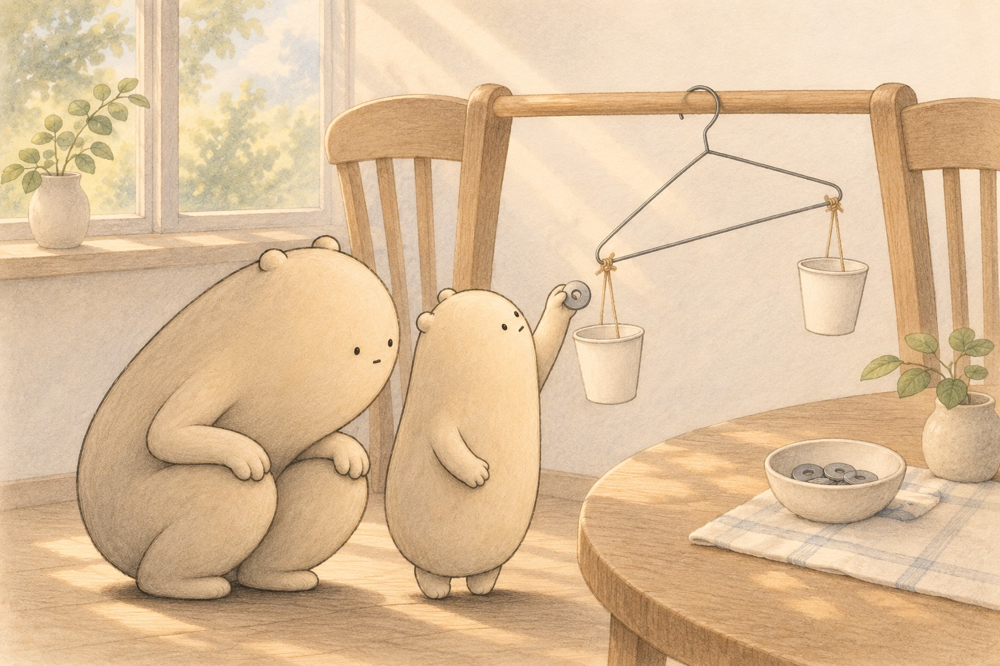
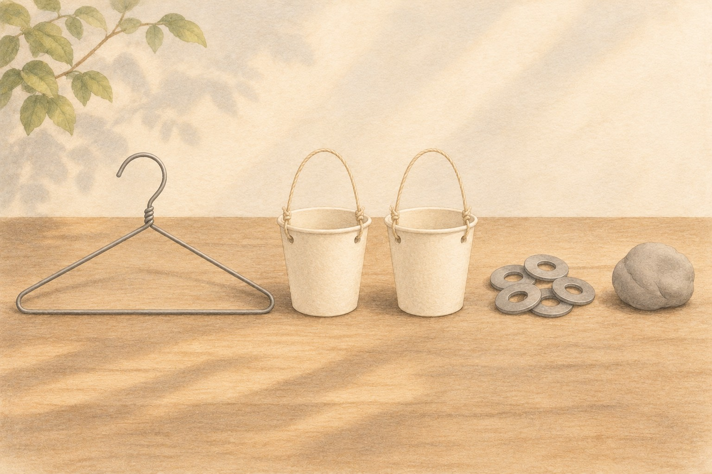
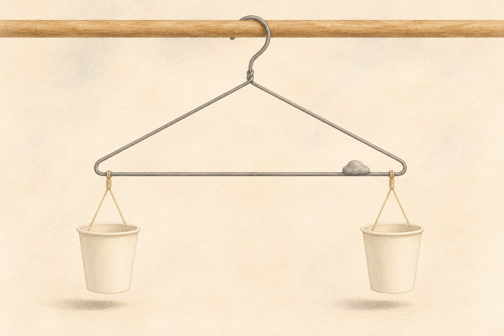
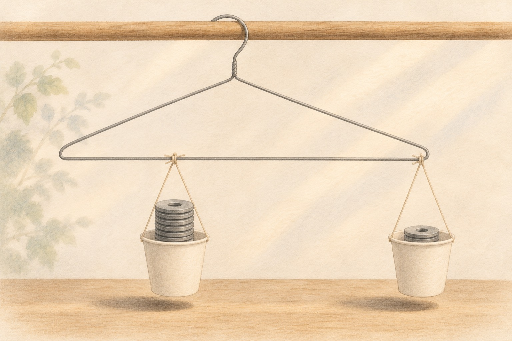
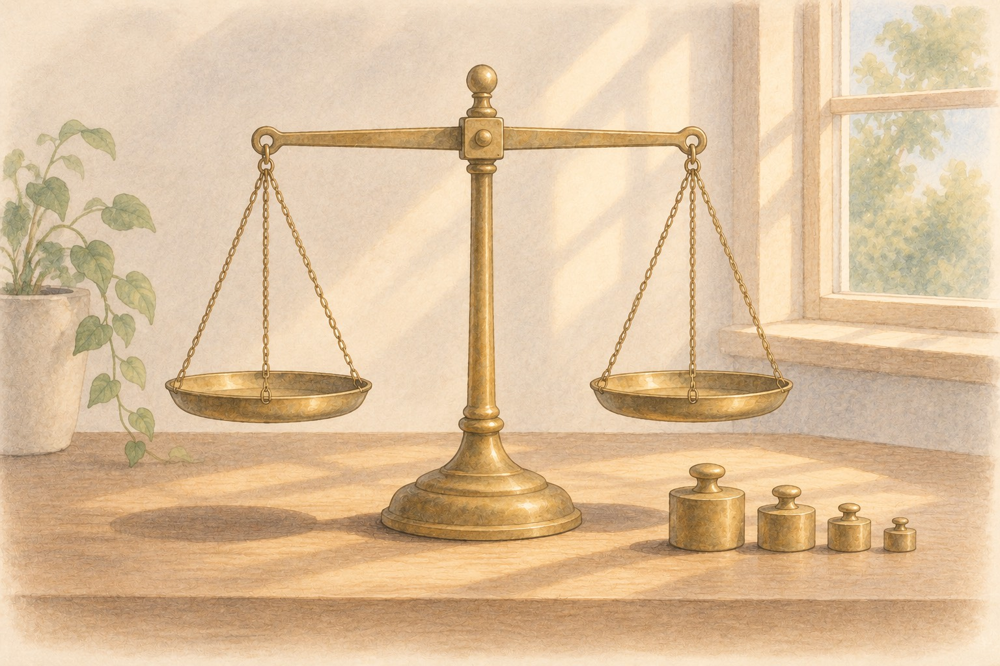
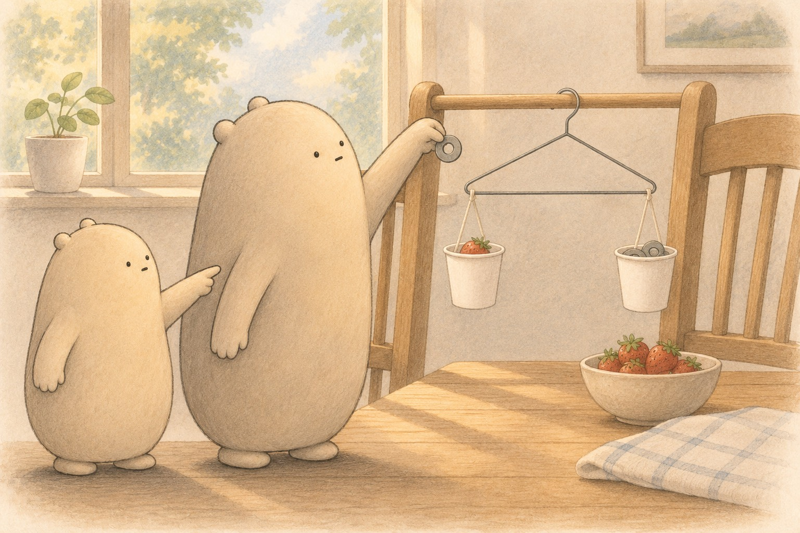

How can a bent wire hanger tell which side is heavier?

Where shall we look?

A hook to turn on, two cups, equal washers and a pinch of clay.
What turns a hanger into a scale?
Find the hanger, the two cups on their strings, the washers and the lump of clay.
A little explanation & something to try
The hook is the pivot: the whole hanger turns around that one point. Each cup pulls down on its own side. When one side pulls harder, that side dips and the other rises. Washers make handy weights, because every washer in a box weighs about the same. Then you can count them.
Try this. Hang a hanger from a broom handle across two chairs. Tie a paper cup to each bottom corner. Drop one washer in a cup. Which way does it tip?

A pinch of clay makes the empty cups hang level before weighing.
Why make the empty cups level first?
Find the hook at the top, the two empty cups at the same height and the tiny lump of clay.
A little explanation & something to try
Two empty cups never weigh exactly the same, and a hanger may be a little bent. A pinch of clay on the high side evens them out. This is called taring, or zeroing. Afterwards, only the things you add can tip the hanger. Tap it, and it rocks, then settles level again, because most of its weight hangs below the hook.
Try this. Hang the two empty cups and look closely. Is one side a little low? Press a tiny bit of clay on the high side until both cups hang even.

Near the hook, a cup needs more washers to balance one far out.
Does it matter where a cup hangs?
Compare the tall stack of washers near the middle with the short stack out at the corner.
A little explanation & something to try
Yes! A weight far from the pivot gives a bigger turning push, called torque. A cup hung twice as far from the hook needs only half as many washers to balance. That is why a big kid can sit near the middle of a seesaw and still balance a small kid at the far end.
Try this. Move one cup's string close to the middle of the bottom bar. Put 2 washers in the corner cup. How many washers does the middle cup need to make it level?

A balance compares two sides, so it would match the same on the Moon.
Would a balance work on the Moon?
Find the two level pans on their chains and the row of brass weights beside them.
A little explanation & something to try
Yes. A balance compares two things, so it measures mass, the amount of stuff. The Moon pulls about one sixth as hard as Earth, but it pulls both pans less at the same time. A spring scale would show a smaller number there. Old shops used brass weights of set sizes, so everyone measured the same way.
Try this. Put a strawberry in one cup. Add washers to the other cup until the hanger hangs level. How many washers weigh the same as one strawberry?
Count the washers in groups
Each group or row has the same number. Add the equal groups or rows to find the total.

When the hanger hangs level, the strawberry matches the washers.
Choose one task. Draw its equal groups or rows and tell how the addition matches your drawing.
1.Little Wonderer drops 3 washers into each of 2 cups. How many washers are there altogether?
3 + 3 =
A small hint
Add one group at a time: 3 + 3.
2.The big one lines up washers in 3 rows, with 4 washers in each row. How many washers are there?
4 + 4 + 4 =
A small hint
Add one row at a time: 4 + 4 + 4.
3.The little one presses 2 bits of clay onto each of 4 hangers. How many bits of clay are there?
2 + 2 + 2 + 2 =
A small hint
Add one group at a time: 2 + 2 + 2 + 2.
4.A shelf holds 2 rows of paper cups, with 5 cups in each row. How many cups are there?
5 + 5 =
A small hint
Add one row at a time: 5 + 5.
5.Big Wonderer finds that 1 strawberry balances 3 washers. How many washers balance 5 strawberries?
3 + 3 + 3 + 3 + 3 =
A small hint
Add one group at a time: 3 + 3 + 3 + 3 + 3.
6.An old shop keeps brass weights in 4 rows, with 5 weights in each row. How many weights are there?
5 + 5 + 5 + 5 =
A small hint
Add one row at a time: 5 + 5 + 5 + 5.
The hanger on the broom handle
How a Hanger Balance Works
Which side dips?
Little Wonderer hangs a wire hanger from a broom handle across two chairs. Two paper cups dangle from its bottom corners. The little one drops one washer into the left cup, and down it dips! Big Wonderer crouches low to look. How can a bent wire tell which side is heavier?
What happens when the washer drops into the left cup?
Parts of a balance
A balance scale needs only a few simple parts. The hook at the top is the pivot, the one point the whole hanger turns on. The two cups hold the things you want to compare. Flat steel washers make good weights, because each one weighs about the same. A pinch of soft clay will help, too.
What is the pivot on a hanger balance?
Zero it first
Before weighing anything, make the empty cups hang level. Two cups are never exactly the same, so one side may droop a little. Press a tiny pinch of clay onto the high side until both cups hang even. People call this taring, or zeroing the scale. Now only the things you add can tip the hanger.
Why do you make the empty cups level first?
Distance matters
Here is a clue. Hang the left cup near the middle, close under the hook. Now it needs many more washers to balance a cup out at the far corner! A weight far from the pivot gives a bigger turning push. Twice as far needs only half as much. This rule is called the law of the lever.
Why does a cup near the middle need more washers?
Weighing a strawberry
Back at the chairs, the little one sets a strawberry in the left cup. Big Wonderer adds washers to the other cup, one at a time, until it hangs level. Now the guess changes. A balance does more than find the heavier side. When it hangs level, the strawberry weighs the same as those washers, so a washer works like a unit.
What does it mean when the hanger hangs level?
Same on the Moon
Here is a surprise. Carry a balance to the Moon, and the strawberry still matches the same washers! The Moon pulls everything more weakly, but it pulls both cups less at the same time. A bathroom scale uses a spring, so its number would drop there. Could you build a balance fine enough to weigh a feather?